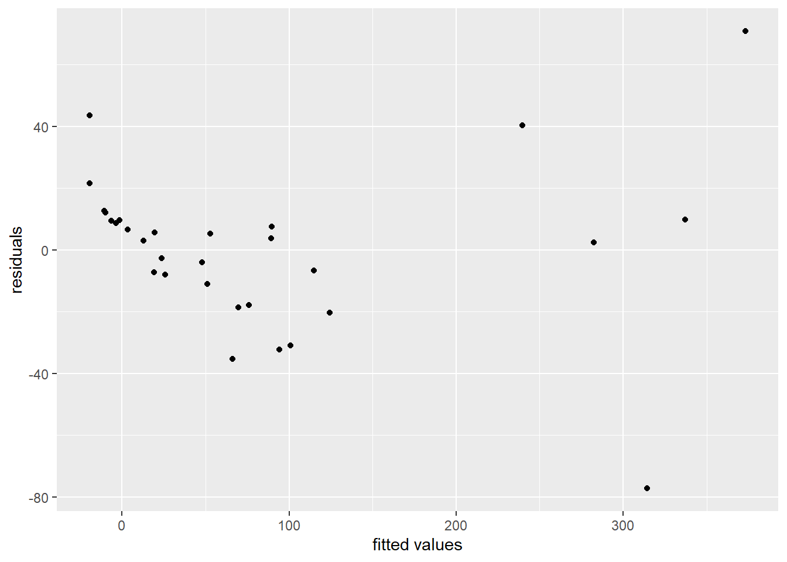
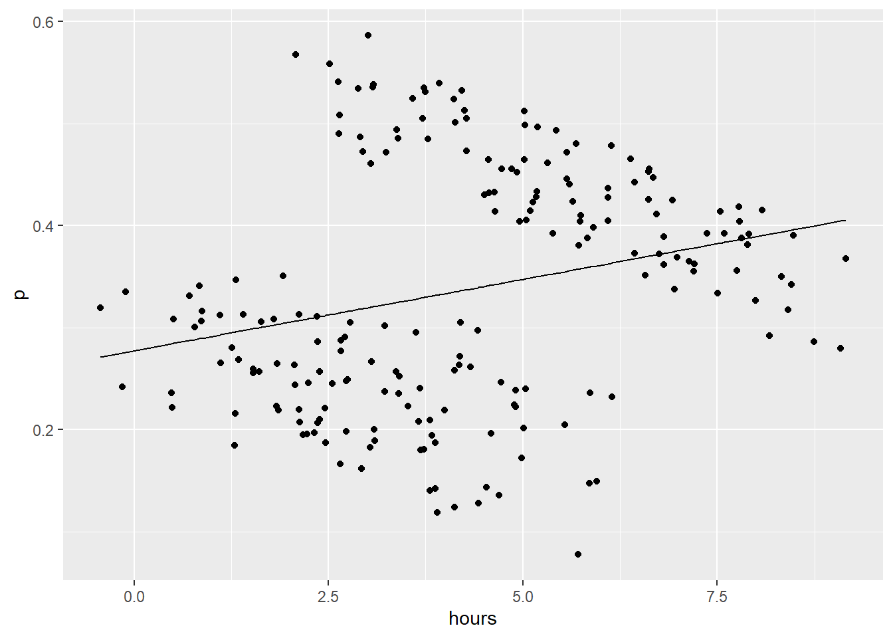
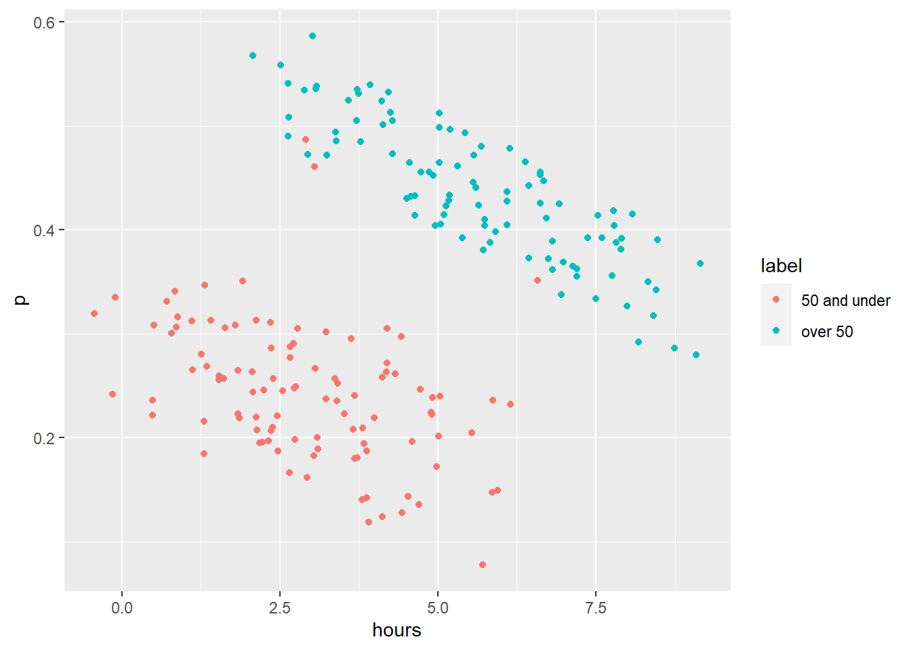
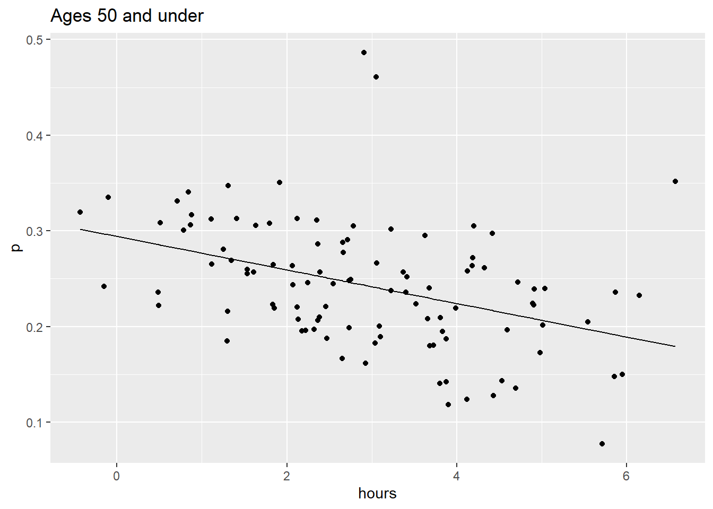
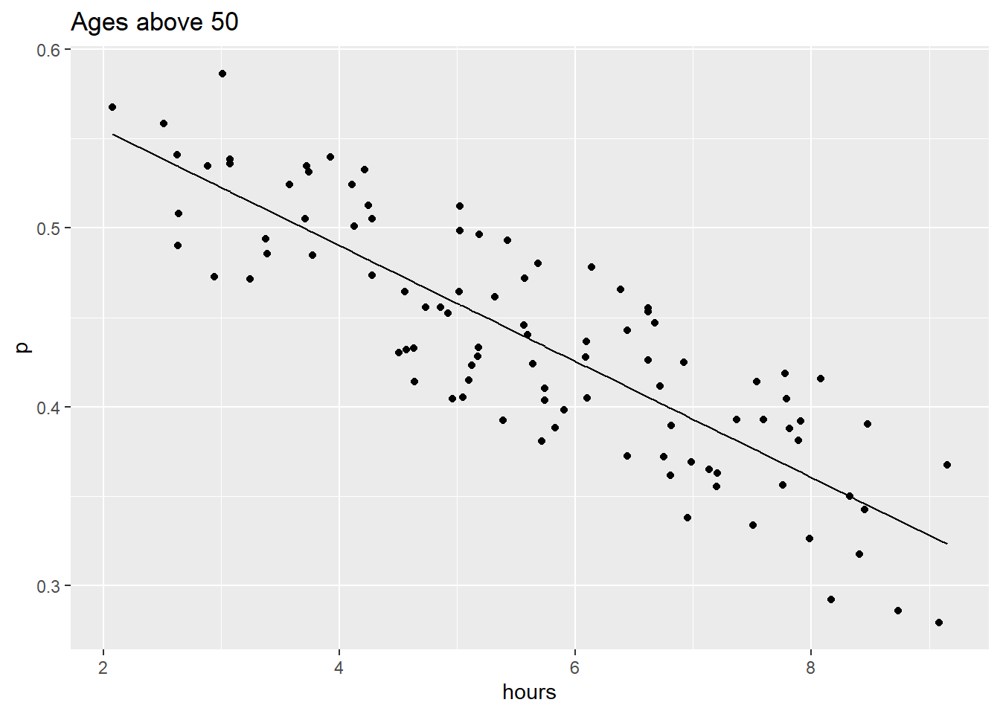
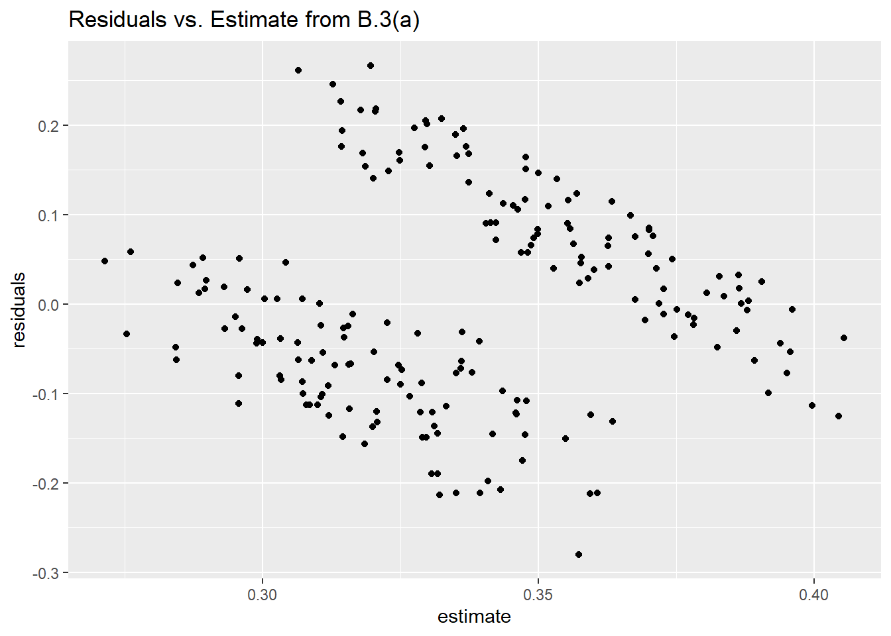
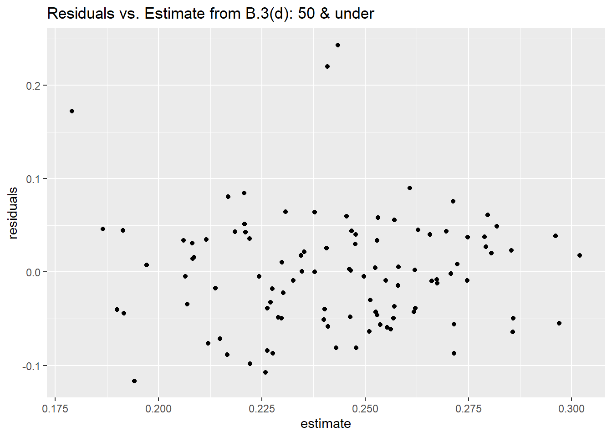
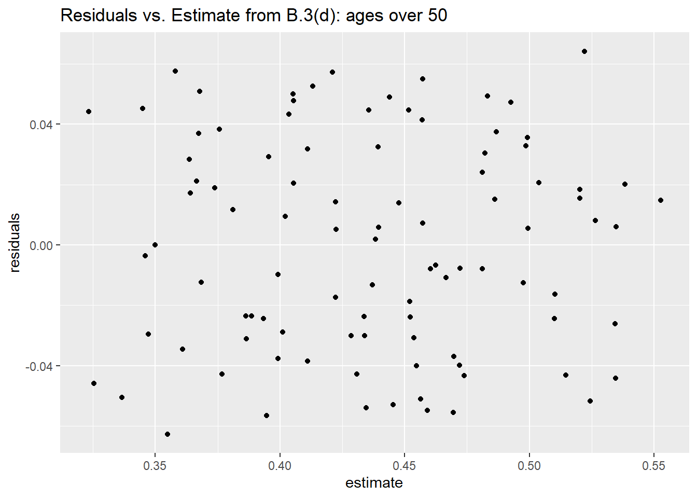

library(ggplot2)
library(tidyverse)STAT 5010 - HW2
Homework #2_Version_2
See Canvas for this assignment due date. Complete all of the following problems. Ideally, the theoretical problems should be answered in a Markdown cell directly underneath the question. If you don’t know LaTex/Markdown, you may submit separate handwritten solutions to the theoretical problems. Please do not turn in messy work. Computational problems should be completed in this notebook (using the R kernel is preferred). Computational questions may require code, plots, analysis, interpretation, etc. Working in small groups is allowed, but it is important that you make an effort to master the material and hand in your own work.
A. Theoretical Problems
Problem A.1
In class, we analyzed regression with an intercept, \(\beta_0\). In some circumstances, we may have theoretical reasons to suggest that the intercept term is zero. As such, some have proposed to not estimate \(\beta_0\), and instead, use the one-predictor linear model: \(Y_i = \beta_1x_i + \varepsilon_i\). The goal of this problem is to understand some of the consequences of using this model.
A.1 (a) [8 points] Find the least squares estimator of \(\beta_1\).
YOUR ANSWER HERE
\[Y_i = \beta_1x_i + \varepsilon_i \Rightarrow \hat{Y_i} = \hat{\beta_1}x_i\] \[ \varepsilon_i = (Y_i - \hat{Y_i})^2 = (Y_i - \hat{\beta_1}x_i)^2\]
Minimum residual would occur where the derivative of \(\varepsilon_i\) is zero. Thus to find best estimator \(\hat{\beta_1}\) for lowest residual would be found by using the partial derivative of the residual, \(\varepsilon_i\), with respect to the estimator \(\hat{\beta_1}\) and set that equal to zero.
\[\begin{equation} \frac{\partial \varepsilon_i}{\partial \hat{\beta_1}} = \frac{\partial}{\partial \hat{\beta_1}}(Y_i - \hat{\beta_1}x_i)^2 = 0\\ = \frac{\partial}{\partial \hat{\beta_1}}[Y_i^2 - 2\hat{\beta_1}x_i + (\hat{\beta_1}x_i)^2] \\ = 0 - 2(1)x_i + 2\hat{\beta_1}x_i^2 \\ = 2\hat{\beta_1}x_i^2 - 2x_i = 0 \\ \end{equation}\]
Then from here we can solve for \(\hat{\beta_1}\).
\[\begin{equation} 2\hat{\beta_1}x_i^2 - 2x_i = 0 \\ \Rightarrow \hat{\beta_1}x_i^2 - x_i = 0 \\ \Rightarrow \hat{\beta_1}x_i^2 = x_i \\ \Rightarrow \hat{\beta_1} = \frac{1}{x_i} = x_i^{-1} \end{equation}\]
A.1 (b) [4 points] Show that the residuals of this model fit do not necessarily sum to zero.
You can do this through a simulation if you’d like!
YOUR ANSWER HERE
So from A.1(a), if \(\hat{\beta_1} = \frac{1}{x_i}\), then we have the following residual:
\[\varepsilon_i = (Y_i - \hat{Y_i})^2 \\ = (Y_i - \hat{\beta_1}x_i)^2 \\ = [Y_i - (x_i^{-1})x_i]^2\\ = (Y_i - 1)^2\]
We have that \(\varepsilon_i = (Y_i - 1)^2\)
So we need some evidence that there can be cases where \[\sum_{i=1}^n \varepsilon_i = \sum_{i=1}^n (Y_i - 1)^2 \ne 0 \]
I can make up a super simple example of \(Y\). (And that’s all I need for an example of this type of linear regression model since the residuals are only dependent on \(Y_i\))
#YOUR CODE HERE
y <- c(1,2,3,4) # super simple example Y
print(y)[1] 1 2 3 4sum((y - 1)^2) # sum of residuals eps = (Y_i - 1)^2[1] 14(obviously \(14 \ne 0\))
A.1 (c) [6 points] Show that
\[\begin{align*} \sum^n_{i=1}(Y_i - \widehat{Y}_i)(\widehat{Y}_i - \bar{Y}) \end{align*}\]is not necessarily zero. Use this fact to argue that, for this model, the coefficient of determination, \(R^2\) does not have the interpretation given in class.
Again, this proof can be done through simulation.
YOUR ANSWER HERE
\[\hat{Y_i} = \hat{\beta_1}x_i = (x_i^{-1})x_i = 1\]
In other words, this model always predicts 1 for all values of \(x\).
#YOUR CODE HERE
# I'll use the same example Y
y <- c(1,2,3,4)
y_hat <- rep(1,length(y)) # predicted y (y-hat) is all ones (of same length Y)
print(y_hat)[1] 1 1 1 1y_bar <- mean(y)
print(y_bar)[1] 2.5sum((y - y_hat)*(y_hat - y_bar)) # sum of (Y_i - Y_hat)(Y_hat - Y_bar)[1] -9Problem A.2
Suppose that, for \(i = 1,...,n\), the pairs \((x_i, y_i)\) are generated according to a simple linear regression model
\[Y_i = \beta_0 + \beta_1x_i + \varepsilon_i,\]
where \(x_i\) are fixed constants and \(\varepsilon_i \overset{iid}{\sim} N(0,\sigma^2)\). Then, imagine reparameterizing the model as
\[Y_i = \beta^*_0 + \beta^*_1\left(\frac{x_i- \bar{x}}{sd(x)}\right) + \varepsilon_i,\]
where \(sd(x) = \frac{1}{n-1}\sum(x_i - \bar{x})^2\).
Let \(\widehat\beta_j\) be the least squares estimator of \(\beta_j\), and \(\widehat\beta^*_j\) be the least squares estimator of \(\beta^*_j\) for \(j=0,1\).
A.2 (a) [7 points] Show that \(\widehat\beta^*_1 \ne \widehat\beta_1\).
HINT: For regression with one predictor, \(\displaystyle \widehat\beta_1 = \frac{\sum^n_{i=1}\left( x_i - \bar{x}\right)\left(y_i - \bar{y} \right)}{\sum^n_{i=1}\left(x_i - \bar{x}\right)^2}\).
YOUR ANSWER HERE
#YOUR CODE HEREA.2 (b) [4 points] Show that, in general, \(\widehat\beta^*_0 \ne \widehat\beta_0\), and find \(\widehat\beta^*_0\) in terms of \(Y_i\). In what particular case is \(\widehat\beta^*_0 = \widehat\beta_0\)?
HINT: For SLR, \(\widehat\beta_0 = \bar{y} - \widehat\beta_1 \bar{x}\).
YOUR ANSWER HERE
A.2 (c) [5 points] Why might the reparameterized model be beneficial?
YOUR ANSWER HERE
Problem A.3: The multivariate normal distribution and its application to regression
The multivariate normal distribution of an \(n\)-dimensional vector \(\mathbf{Y} = (Y_1,...,Y_n)^T\) can be written in the following notation:
\[\mathbf{Y} \sim N\left(\boldsymbol{\mu}, \Sigma \right),\]
where \(\boldsymbol{\mu} = (\underbrace{ \mu_1 }_{E(Y_1)},...,\underbrace{ \mu_n }_{E(Y_n)})^T\) is a vector of means and
\(\Sigma = \left(\begin{matrix} \sigma_{Y_1, Y_1} & \sigma_{Y_1, Y_2} & \cdots & \sigma_{Y_1, Y_n} \\ \sigma_{Y_2, Y_1} & \sigma_{Y_2, Y_2} & \cdots & \sigma_{Y_2, Y_n} \\ \vdots & \vdots & \ddots & \vdots \\ \sigma_{Y_n, Y_1} & \sigma_{Y_n, Y_2} & \cdots & \sigma_{Y_n, Y_n} \\ \end{matrix}\right)\)
and \(\Sigma\) is a variance-covariance matrix with entries \(\displaystyle \sigma_{Y_i, Y_j} = Cov(Y_i,Y_j)\) for \(i,j = 1,...,n\).
What does it mean for a vector to have a multivariate normal distribution? It means that, for any constant (i.e., non-random) vector \(\mathbf{a} = (a_1,a_2,...,a_n)^T\), every linear combination \(X = \mathbf{a}^T\mathbf{Y} = a_1Y_1 + a_2Y_2 + ... + a_nY_n\) has a univariate normal distribution with mean \(\mu_X = \mathbf{a}^T\boldsymbol{\mu}\) and variance \(\sigma_X^2 = \mathbf{a}^T\Sigma\mathbf{a}\).
Further, note that: if \(\mathbf{b}\) is an \(m\times1\) constant vector, and \(B\) is an \(m \times n\) constant matrix, then \(\mathbf{b} + B\mathbf{Y} \sim N\left(\mathbf{b} + B\boldsymbol\mu, B\Sigma B^T \right)\).
Ok, those were some great properties, and you should make use of them below.
Consider the linear regression model \(\mathbf{Y} = X\boldsymbol\beta + \boldsymbol{\varepsilon}\), where \(\,\boldsymbol{\varepsilon} {\sim} N(\mathbf{0},\sigma^2I_n)\), \(\mathbf{0}\) is an \(n\times 1\) vector, and \(I_n\) is the \(n \times n\) identity matrix.
A.3 (a) [5 points] Find the distribution of \(\varepsilon_i\).
Use the properties above!
YOUR ANSWER HERE
A.3 (b) [5 points] Show that \(\mathbf{Y} \sim N(X\boldsymbol\beta, \sigma^2I_n)\)
YOUR ANSWER HERE
A.3 (c) [10 points] Let \(\widehat{\boldsymbol\beta}\) be the least squares estimator of \(\boldsymbol{\beta}\). Prove that \(\boldsymbol{\widehat\beta}\) has a multivariate normal distribution. What are the mean and variance-covariance matrix?
YOUR ANSWER HERE
B. Computational Problems
Problem B.1
B.1 (a) [10 points] Run a simulation to confirm your result in problem A.2 (a) - (b). Let’s do this in parts. In the cell directly below:
- Set
n = 50, \(\boldsymbol\beta =\)beta = c(1, 3.5). - Simulate \(n\) predictor values (\(x\)) randomly from \(N(3,1)\). Store those values in a variable
x. - Simulate \(n\) random error terms from \(N(0,2)\). Store them in the variable
e. - Calculate the response (\(y\)) according to
y = b0 + b1 x + e - Fit a simple linear regression model to the data using the
lm()function. Store thelm()object in a variableland the coefficients of that model in a variableb1 = coef(l).
set.seed(1918)
n = 50; beta = c(1,3.5);
#YOUR CODE HERE
x <- rnorm(n,3,1) # predictors
e <- rnorm(n,0,2) # error terms
y = beta[1] + beta[2]*x + e # responsel <- lm(y ~ x)
b1 = coef(l)summary(l)
Call:
lm(formula = y ~ x)
Residuals:
Min 1Q Median 3Q Max
-4.8629 -1.3586 -0.1809 1.4524 6.6325
Coefficients:
Estimate Std. Error t value Pr(>|t|)
(Intercept) 0.9936 0.9195 1.081 0.285
x 3.5910 0.2985 12.028 4.29e-16 ***
---
Signif. codes: 0 '***' 0.001 '**' 0.01 '*' 0.05 '.' 0.1 ' ' 1
Residual standard error: 2.328 on 48 degrees of freedom
Multiple R-squared: 0.7509, Adjusted R-squared: 0.7457
F-statistic: 144.7 on 1 and 48 DF, p-value: 4.288e-16print(b1)(Intercept) x
0.993581 3.591000 B.1 (b) [8 points] Now:
- Center and scale the predictor values (as done in A.2 above) and store those values in a variable
z. - Fit a simple linear regression model to the new data, \((z_i, y_i)\), using the
lm()function. Store thelm()object in a variablel2and the coefficients of that model in a variableb2 = coef(l2)(b2should be a vector of length \(2\)). - In the Markdown cell below the hidden test cell, describe the differences between
bandb2.
#YOUR CODE HERE
#re-parameterize
z <- beta[1] + beta[2]*((x-mean(x))/sd(x)) + e
head(z)[1] 1.0710375 3.8229460 -1.7599973 2.6174574 0.9136948 1.4354619# new linear regression
l2 <- lm(y ~ z)
b2 = coef(l2)print(b2)(Intercept) z
9.966114 1.078506 YOUR ANSWER HERE
B.2 The “gala” data-set, revisited.
B.2 (a) [0 points] Load the “gala” data-set, and perform a linear regression with Species as the response and Endemics, Elevation, Nearest, and Adjacent as predictors. Store your lm() object in the variable lm_species. Note that you already did this on the first assignment.
gala = read.csv("https://raw.githubusercontent.com/CUBuffs/Statistical-Learning-/main/Modern%20Regression%20Analysis/Datasets/gala.csv")
gala = gala[,-1]
summary(gala) Species Endemics Area Elevation
Min. : 2.00 Min. : 0.00 Min. : 0.010 Min. : 25.00
1st Qu.: 13.00 1st Qu.: 7.25 1st Qu.: 0.258 1st Qu.: 97.75
Median : 42.00 Median :18.00 Median : 2.590 Median : 192.00
Mean : 85.23 Mean :26.10 Mean : 261.709 Mean : 368.03
3rd Qu.: 96.00 3rd Qu.:32.25 3rd Qu.: 59.237 3rd Qu.: 435.25
Max. :444.00 Max. :95.00 Max. :4669.320 Max. :1707.00
Nearest Scruz Adjacent
Min. : 0.20 Min. : 0.00 Min. : 0.03
1st Qu.: 0.80 1st Qu.: 11.03 1st Qu.: 0.52
Median : 3.05 Median : 46.65 Median : 2.59
Mean :10.06 Mean : 56.98 Mean : 261.10
3rd Qu.:10.03 3rd Qu.: 81.08 3rd Qu.: 59.24
Max. :47.40 Max. :290.20 Max. :4669.32 #YOUR CODE HERE
lm_species <- lm(Species ~ Endemics+Elevation+Nearest+Adjacent, data = gala)
summary(lm_species)
Call:
lm(formula = Species ~ Endemics + Elevation + Nearest + Adjacent,
data = gala)
Residuals:
Min 1Q Median 3Q Max
-77.232 -10.318 3.412 9.521 70.768
Coefficients:
Estimate Std. Error t value Pr(>|t|)
(Intercept) -17.510039 8.333335 -2.101 0.0459 *
Endemics 4.192551 0.429056 9.772 5.1e-10 ***
Elevation -0.008594 0.032903 -0.261 0.7961
Nearest -0.203743 0.376472 -0.541 0.5932
Adjacent -0.005629 0.009876 -0.570 0.5738
---
Signif. codes: 0 '***' 0.001 '**' 0.01 '*' 0.05 '.' 0.1 ' ' 1
Residual standard error: 28.59 on 25 degrees of freedom
Multiple R-squared: 0.9464, Adjusted R-squared: 0.9378
F-statistic: 110.3 on 4 and 25 DF, p-value: 1.673e-15B.2 (b) [10 points] Calculate the residual sum of squares, and the total sum of squares for this model, and store these quantities in rss and tss, respectively. Then, use these calculations to verify the Multiple R-squared calculation in the summary from the previous part. Store your \(R^2\) for this model in r2. Interpret \(R^2\) (assume, for the moment, that the model is correct, and so the interpretation holds). Note that the anova table calculates sums of squares. Why doesn’t the total sum of squares show up in the table?
#YOUR CODE HERE
(anova(lm_species))Analysis of Variance Table
Response: Species
Df Sum Sq Mean Sq F value Pr(>F)
Endemics 1 359208 359208 439.5849 <2e-16 ***
Elevation 1 1007 1007 1.2325 0.2775
Nearest 1 172 172 0.2107 0.6502
Adjacent 1 265 265 0.3249 0.5738
Residuals 25 20429 817
---
Signif. codes: 0 '***' 0.001 '**' 0.01 '*' 0.05 '.' 0.1 ' ' 1ess = sum((fitted(lm_species) - mean(gala$Species))^2);
rss = sum(residuals(lm_species)^2);
tss = with(gala, sum((Species - mean(Species))^2));
r2 = 1-rss/tss;
cat(paste("The explained sum of squares is", round(ess,2), "."),
paste("The residual sum of squares is ", round(rss,2), "."),
paste("The total sum of squares is ", round(tss,2), "."),
paste("The coefficient of determination is", round(r2,2), "."),
#paste("The estimate of the error standard deviation is", round(sigma,2), "."),
sep = "\n"
)The explained sum of squares is 360652.56 .
The residual sum of squares is 20428.8 .
The total sum of squares is 381081.37 .
The coefficient of determination is 0.95 .YOUR ANSWER HERE
I’m guessing the anova() function likely doesn’t include the total sum of squares, because it is something that is not dependent on linear regression estimates or residuals (and maybe from the fact it can be derived from RSS and ESS).
B.2 (c) [4 points] Plot the residuals vs the fitted values. Based on what we’ve discussed in class, what do you expect to see in this plot? Do you see what you expect to see? If not, what does that mean?
#YOUR CODE HERE
ggplot(lm_species,aes(x=fitted(lm_species),y=residuals(lm_species))) +
geom_point() +
xlab("fitted values") +
ylab("residuals")
YOUR ANSWER HERE
B.3
Consider the data below on the number of hours of exercise per week versus the risk of developing a disease. We might look at two sets of patients, those below the age of 50 and those over the age of 50.
B.3 (a) [4 points] Estimate the regression line \[p_i = \beta_0 + \beta_1 hours_i + \varepsilon_i,\] where \(\varepsilon_i\) is assumed to be \(N(0,\sigma^2)\). Denote the estimated regression line as \[\widehat p_i = \widehat\beta_0 + \widehat\beta_1 hours_i.\] Plot the estimated regression line on top of the data.
df = read.csv("https://raw.githubusercontent.com/CUBuffs/Statistical-Learning-/main/Modern%20Regression%20Analysis/Datasets/colorado.edu_attached-files_simp.txt", header = TRUE, sep = "\t")
df$p = df$p/100
head(df) ages hours p
1 50 3.6239201 0.2952386
2 26 2.4600381 0.2210206
3 35 3.8070524 0.2095405
4 28 3.0390379 0.1829365
5 43 0.7089589 0.3309662
6 45 4.4194311 0.2976093#YOUR CODE HERE
est_reg <- lm(p ~ hours, data =df)
summary(est_reg)
Call:
lm(formula = p ~ hours, data = df)
Residuals:
Min 1Q Median 3Q Max
-0.279701 -0.085412 -0.008813 0.076613 0.266713
Coefficients:
Estimate Std. Error t value Pr(>|t|)
(Intercept) 0.277558 0.018034 15.391 < 2e-16 ***
hours 0.013972 0.003796 3.681 0.000299 ***
---
Signif. codes: 0 '***' 0.001 '**' 0.01 '*' 0.05 '.' 0.1 ' ' 1
Residual standard error: 0.114 on 198 degrees of freedom
Multiple R-squared: 0.06405, Adjusted R-squared: 0.05933
F-statistic: 13.55 on 1 and 198 DF, p-value: 0.0002994est_betas = coef(est_reg)
estimate = est_betas[1] + est_betas[2]*df$hours
ggplot(data = df,aes(x=hours)) +
geom_point(aes(y=p)) +
geom_line(aes(y=estimate)) 
B.3 (b) [3 points] What is the interpretation of \(\widehat\beta_1\)?
YOUR ANSWER HERE
In this case, \(\widehat\beta_1\) is interpreted to be positive when estimated from the entire dataset.
B.3 (c) [9 points] Now, create a variable that is 1 if the individual is over 50 years old and 0 otherwise. Plot \(p\) against \(hours\) for each subgroup. What do you notice?
#YOUR CODE HERE
df_grouped <- df %>% mutate(over50 = as.integer(ifelse(ages>50,1,0))) # 1 is over 50; 0 is 50 and under
df_grouped <- df_grouped %>% group_by(over50) # I guess I didn't end up needing this, but I'll still leave it in here
head(df_grouped)# A tibble: 6 × 4
# Groups: over50 [1]
ages hours p over50
<int> <dbl> <dbl> <int>
1 50 3.62 0.295 0
2 26 2.46 0.221 0
3 35 3.81 0.210 0
4 28 3.04 0.183 0
5 43 0.709 0.331 0
6 45 4.42 0.298 0#YOUR CODE HERE
label <- ifelse(df_grouped$over50 == 1,"over 50","50 and under")
ggplot(data = df_grouped,aes(x=hours,y=p,color=label)) + geom_point()
YOUR ANSWER HERE
I notice two distinct ‘clusters’ that more or less clearly separate those who are either over or under 50 years of age. And both seem easy to do linear regression and perhaps expect a rather negative slope for both.
(I don’t explicitly show it here, but there always appear to be three dots of the other color whenever I try over50 = 1 for ages \(\ge 50\) or \(\le 50\). So both clusters will appear to always have 3 outliers from the other cluster it seems.)
B.3 (d) [9 points] Estimate two regression lines: one for only the individuals under 50, and the other for individuals over 50. Interpret the slope coefficients of each.
#YOUR CODE HERE
le_50 <- df[df_grouped$over50 == 0,] # the data where ages are <50
g_50 <- df[df_grouped$over50 == 1,] # the data where ages are >= 50
le_p <- lm(p~hours,data=le_50)
summary(le_p)
Call:
lm(formula = p ~ hours, data = le_50)
Residuals:
Min 1Q Median 3Q Max
-0.116548 -0.045052 -0.000001 0.037414 0.243181
Coefficients:
Estimate Std. Error t value Pr(>|t|)
(Intercept) 0.294337 0.013039 22.574 < 2e-16 ***
hours -0.017539 0.003949 -4.441 2.3e-05 ***
---
Signif. codes: 0 '***' 0.001 '**' 0.01 '*' 0.05 '.' 0.1 ' ' 1
Residual standard error: 0.06098 on 101 degrees of freedom
Multiple R-squared: 0.1634, Adjusted R-squared: 0.1551
F-statistic: 19.72 on 1 and 101 DF, p-value: 2.296e-05g_p <- lm(p~hours,data=g_50)
summary(g_p)
Call:
lm(formula = p ~ hours, data = g_50)
Residuals:
Min 1Q Median 3Q Max
-0.06263 -0.03002 0.00195 0.03044 0.06417
Coefficients:
Estimate Std. Error t value Pr(>|t|)
(Intercept) 0.619998 0.012086 51.30 <2e-16 ***
hours -0.032428 0.002044 -15.87 <2e-16 ***
---
Signif. codes: 0 '***' 0.001 '**' 0.01 '*' 0.05 '.' 0.1 ' ' 1
Residual standard error: 0.03507 on 95 degrees of freedom
Multiple R-squared: 0.726, Adjusted R-squared: 0.7232
F-statistic: 251.8 on 1 and 95 DF, p-value: < 2.2e-16# not asked but just interesting to see
le_betas = coef(le_p)
le_estimate = le_betas[1] + le_betas[2]*le_50$hours
g_betas = coef(g_p)
g_estimate = g_betas[1] + g_betas[2]*g_50$hours
ggplot(data = le_50,aes(x=hours)) +
geom_point(aes(y=p)) +
geom_line(aes(y=le_estimate)) +
ggtitle("Ages 50 and under")
ggplot(data = g_50,aes(x=hours)) +
geom_point(aes(y=p)) +
geom_line(aes(y=g_estimate)) +
ggtitle("Ages above 50")
YOUR ANSWER HERE
Just looking at the numeric values of the slope coefficients for both regression line summaries, they seem about right. I was expecting a negative slope and nothing too steep.
(And then from the plots afterward the regression models seemed to do an alright job.)
B.3 (e) [3 points] Compare your coefficient interpretations in B.3 (d) and B.3 (b). What do you notice? Is it true that the more you exercise, the lower your probability of the disease?
YOUR ANSWER HERE
B.3 (f) [3 points] Plot the residuals \(\varepsilon_i = p_i - \widehat p_i\) against the fitted values, \(\widehat p_i\) for each model. What do you notice?
#YOUR CODE HERE
ggplot(data=est_reg,aes(x=estimate,y=residuals(est_reg))) +
geom_point() +
xlab("estimate") +
ylab("residuals") +
ggtitle("Residuals vs. Estimate from B.3(a)")
ggplot(data=le_p,aes(x=le_estimate,y=residuals(le_p))) +
geom_point() +
xlab("estimate") +
ylab("residuals") +
ggtitle("Residuals vs. Estimate from B.3(d): 50 & under")
ggplot(data=g_p,aes(x=g_estimate,y=residuals(g_p))) +
geom_point() +
xlab("estimate") +
ylab("residuals") +
ggtitle("Residuals vs. Estimate from B.3(d): ages over 50")
B.3 (g) [3 points] Which model would you prefer and why?
YOUR ANSWER HERE